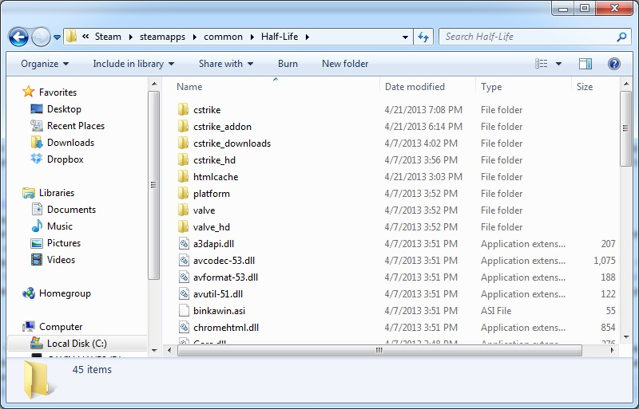

What settings you have in cs can determine whether your hit reg is spot on or you're lagging all over the place, and getting rolled by scrubs. Too many cs players do not properly configure their settings, and would be doing so much better with a few minutes of configuring them.
First I'll cover choosing the right version of cs. As of 4/21/13, there are three main ways to run cs 1.6.
To run the official new steam version, just buy it here its only $10, and goes on sale for as low as $2.50 sometimes. You also get Counter-Strike: Condition Zero with it. This is worth several times its price. If you do not have a credit card, buy a steam giftcard, or a visa giftcard, etc.
Deprecated option: run the old 2009 build 4554 version on steam. This is a work around from when the Febuary 2013 steampipe update came out with lots of bugs. Most of the bugs have been patched since then and the newest steam cs provides the best experience currently. If you need to talk with nonsteam clients, this version is needed, but you will not be able to talk with other legit steam players with this method as the new update switched the voice codecs. This is a little bit tricky to set up, so don't try this if you don't have patience, follow guide here.
The third option is to use a nonsteam client. This is a last resort, support the developers and buy it as linked above. If your going to use a nonsteam client, use cswarzone (google it you leeching parasite).
This part is written for the new steam cs 1.6, but most of this applies to all other versions, differences in notation between them will be noted in extreme cases.
Navigate to the Half-Life folder in steamapps/common. Usually its in C:/Program Files/Steam/Steamapps/common/. Inside you should see a cstrike and a platform amoung other folders at a minimum. Create a new folder named cstrike_addon, now your folder should look something like this, note I also have Half-Life installed in this screenshot.  Enter the cstrike_addon folder. This is the new place to put custom resources for cs to use, such as maps, models, config files, etc, so you no longer need to mix your custom files with the vanila game files. The first thing we are going to add a userconfig.cfg file, a file that servers cannot edit with settings we want consistently in cs such as netcode, sensitivity, etc. Download this and save it to your cstrike_addons folder(right click save link target as.) A userconfig can be broken up into 4 main parts. Netcode, performance, binds, and preferences.
rate - Amount of data you recieve from a server. Ping increases as rate increases. Generally you want a rate around 25000. While in the 2013 updates, the raised the max value to 100000, at time of writing few servers can handle that without massive lag or even have an sv_maxrate that high.
cl_cmdrate - Should be higher than frames per second, max amount of packets you send to the server. For 100 fps (you should have 100 fps in game), I've been using 105. This is too high if you are getting loss on netgraph and means you are not updating fast enough.
cl_updaterate - Amount of updates you are requesting from ther server. 100 was supposed to be max, but to cut down on support tickets, they raised it to 102. I use 102. Lower this if you are on a shit server that can't send enough updates, causing choke on netgraph.
ex_interp - Sets the amount of time (in seconds) to interpolate in between each successive update(cl_updaterate). If cl_updaterate is 100, this will automatically calculate correct interp. I force this to 0.01. Peope with bad internet are known to use .1 .Calculated 1/cl_updaterate.
cl_nosmooth - Determines whether to correct model abruptly when prediction is wrong. You want this set to 1 so your shots aren't missing.
Other netcode notes: Feel free to experiment with these settings, test them on different servers. Don't mess with fpsmodem, cl_rate, etc the net settings here are the only ones you should change. Some servers force rates on people for various reasons. On lan, your rate setting does not matter as sv_lanrate is used by the server
To be continued!